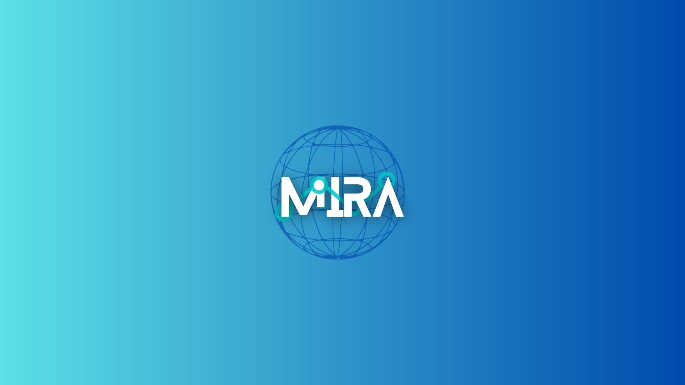
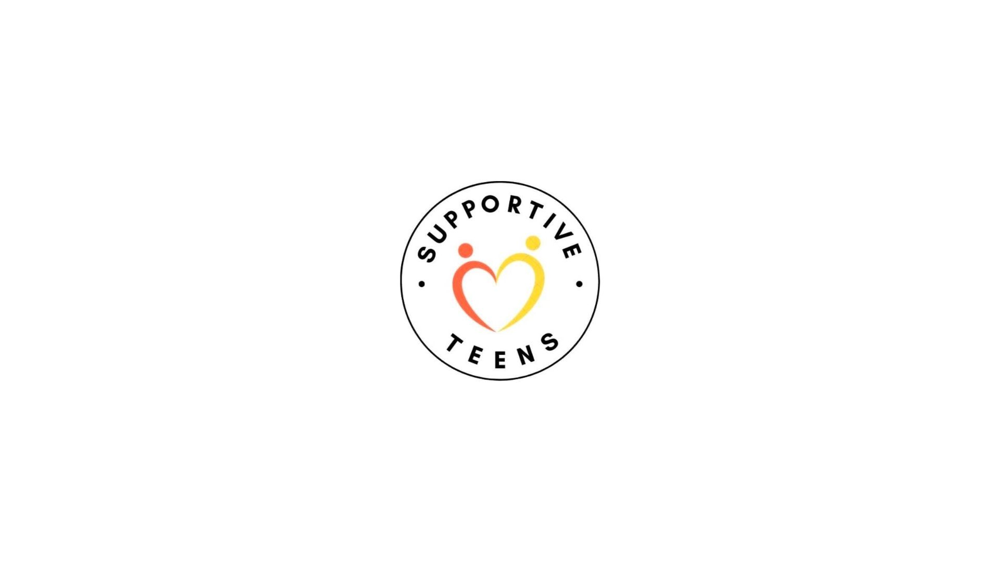

Biomedical Engineering · University of Waterloo
Hi, I’m Zilin Ye.
- Biomedical Engineering Student
- Technology + Healthcare Builder
- Team Player and Critical Thinker
- Detail-Oriented Problem Solver
I’m currently studying Biomedical Engineering at the University of Waterloo, with an interest in building thoughtful technology that supports healthcare, research, and accessible design.
Featured Projects
A mix of software, biomedical engineering, and accessibility-focused work.

Microsoft
MIRA Medical Research Assistant
AI model solution aimed at improving the medical research process using Microsoft Azure.
View case studyC++
Beamforming C++ Program
C++ program used for ultrasound beamforming and imaging workflows.
View case studyAccessible Design
Exercise Equipment Prototyping
Alternative arm exercise equipment prototype designed for wheelchair users.
View case studyOther Activities
Community work and initiatives beyond engineering projects.

Community
Charity Co-Founder / Media Manager
Collaborated with local food banks and the Canadian Red Cross to provide community support through youth-led initiatives.
View activity